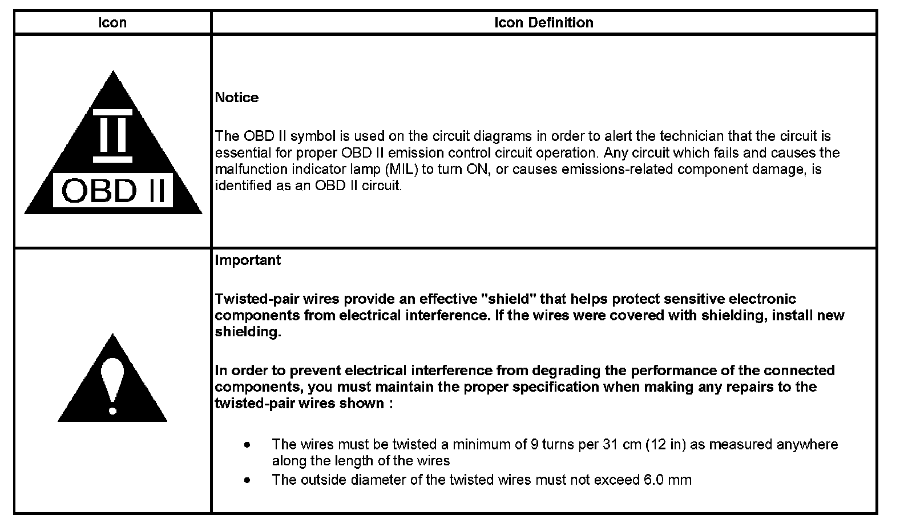

Operation CHARM
: Car repair manuals for everyone.
Home
>>
Cadillac
>>
2007
>>
Escalade ESV AWD V8-6.2L
>>
Repair and Diagnosis
>>
Transmission and Drivetrain
>>
Transmission Control Systems
>>
Diagrams
>>
Electrical Diagrams
>>
4L80-E/4L85-E Automatic Transmission
>>
Automatic Transmission Schematic Icons
Automatic Transmission Schematic Icons
Automatic Transmission Schematic Icons
